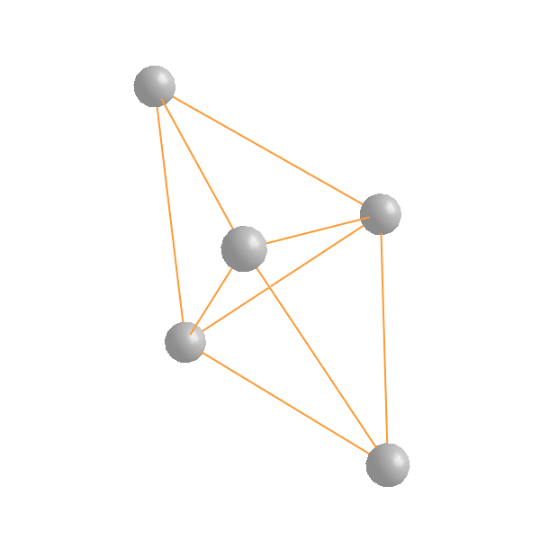
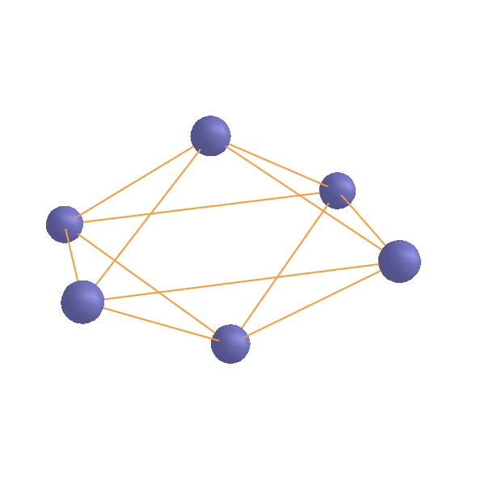

Splined Saddle method: two examples
Introduction:
The purpose of this lesson is to get familiar with running the
splsad executable which is based on the paper:
S.A. Ghasemi and S. Goedecker, J. Chem. Phys. 135, 014108 (2011).
The Input-Output Files
INPUT FILES:
- Executable file: splsad
- standard input files + input.splsad
- if hybrid approach is used, ll_input.dft is also required.
- Two input configurations: posinp.xyz and posinp2.xyz
- anchorposinp.xyz is required for a restart run. One can prepare it manually or copy one of the anchorpoints???.xyz files of the previous run.
OUTPUT FILES:
- saddle.xyz
- anchorpoints???.xyz
- path???.xyz
- nogt.??? (depricated)
- vogt.??? (depricated)
- fort.???? (depricated)
Overview of input.splsad
- All input parameters are set to default.
- The parameters can be set in any order.
- Lines starting with # are comment.
- To set a parameter: first the keyword as the first word and in the same line the value as the second word.
- In case of multiple occurance of a keyword, the last occurance is used.
- runstat new or restart. Default value: new
- approach BFGS or SD or FIRE. Default value: SD
- alphax standard stepsize for minimization. Default value: $0.5$
- fmaxtol convergence criterion for maximum component of force at the saddle point. Default value: $2.0\time 10^{-4}$
- np number of anchor points plut one. Default value: $3$
- npneb number of movable nodes in NEB plus one. Default value: same value as np (I do not mean $3$).
- ns2 is used to increase number of points to estimate the starting point for maximization, i.e. np+ns2. Default value: $0$
- maxforcecall Maximum number of iterations. Default value: $100$
- vdtol Convergence tolerance for maximization step, values between $[0.1,0.01]$ are reasonable. Default value: $0.1$
- htol tolerance for the minimum distance between two points during maximization. Default value: $2.0\times 10^{-2}$
- hybrid yes or no. Default value: no
- fmaxtolneb tolerance for maximum componenet of force for NEB. Use a loose value if you want to use NEB as apreliminary run for final splined saddle calculation. Default value: $2.0\times 10^{-2}$
- pickbestanchorpoints
- doneb yes or no. Default value: yes if runstat is new and no if it is restart
- docineb yes or no. Then splined saddle method is not used. Default value: no
For an example look into: input.splsad file.
Useful keywords to grep from the standard output files:
The output of BigDFT is divided into four parts:
- SPINFO: All of the parameters, which can be set in input.splsad, will be listed by greping this keyword.
- ENDs: Prints the energies and the norms of the forces on the two end points, namely posinp.xyz and posinp2.xyz. It is useful if you want to know whether the points are minima.
- MIN: Lists information (target function, gradient norm and gradient maximum component,...) of the iterations both in NEB and splined saddle parts. In case of NEB the target function is the summation of force norms on the movable nodes and in case of splined saddle the energy of the maximum which is presumably the energy of the saddle points when it is converged.
- fort51: Listed information of the iterations in the maximizations parts of the splined saddle part. Two important quantities are the norm of force at the current iteration of the maximation and the curvature at the current point. Latter must be negative because it must be a maximum. If it is positive, you should not tet the program continue for long since it cannot interpolate or even describe correctly the energy along the pathway.
- fort52: Lists the force norm and force maximum componenet at the maximum point in each iteration of the splined saddle part. Greping for MIN in the splined saddle, provides information for the gradient norm and gradient maximum component of vmax. It is more useful to have information at the saddle point.
Example I: Mg5
This is a very simple example in which the Nitrogen atom moves from one side of the H3 plane to another. We use the hybrid approach in order to reduce significantly the computational cost.
runstat new approach SD alphax 20.d0 fmaxtol 3.d-3 np 3 maxforcecall 350 vdtol 1.d-1 ns2 0 htol 2.d-2 hybrid yes npneb 2 fmaxtolneb 3.d-2
Greping for SPINFO prints the splsad parameters:
SPINFO: runstat new SPINFO: hybrid yes SPINFO: fmaxtolneb 3.000000000000000E-002 SPINFO: approach SD SPINFO: alphax 20.0000000000000 SPINFO: fmaxtol 3.000000000000000E-003 SPINFO: maxforcecall 350 SPINFO: dt 3.000000000000000E-002 SPINFO: np 3 SPINFO: npneb 2 SPINFO: ns2 0 SPINFO: vdtol 0.100000000000000 SPINFO: htol 2.000000000000000E-002 SPINFO: typintpol cubic SPINFO: doneb yes SPINFO: docineb no SPINFO: pickbestanchorpoints yes
Greping for MIN:
BFGSMIN 0 3.857402446444604E-01 0.000E+00 3.85740E-01 2.22111E-01 1.0000E+00 BFGSMIN 1 1.384956470119129E-01 -2.472E-01 1.38496E-01 8.11970E-02 1.0000E+00 BFGSMIN 2 1.310469909916346E-01 -7.449E-03 1.31047E-01 7.78390E-02 1.0000E+00 BFGSMIN 3 1.228428413736213E-01 -8.204E-03 1.22843E-01 7.43843E-02 1.0000E+00 BFGSMIN 4 1.087765815718121E-01 -1.407E-02 1.08777E-01 6.82878E-02 1.0000E+00 BFGSMIN 5 9.022088864933113E-02 -1.856E-02 9.02209E-02 5.83822E-02 1.0000E+00 BFGSMIN 6 7.621142124612373E-02 -1.401E-02 7.62114E-02 5.04867E-02 1.0000E+00 BFGSMIN 7 5.645190533935150E-02 -1.976E-02 5.64519E-02 3.91367E-02 1.0000E+00 BFGSMIN 8 3.912424367801893E-02 -1.733E-02 3.91242E-02 2.79393E-02 1.0000E+00 SDMIN 0 -0.422320882499190E+01 0.000E+00 0.36062E-01 0.18897E-01 0.0000E+00 0 T SDMIN 1 -0.424197565216211E+01 -0.188E-01 0.14482E-01 0.86825E-02 0.1200E+01 0 T SDMIN 2 -0.424631768381917E+01 -0.434E-02 0.12010E-01 0.56404E-02 0.1440E+01 1 T SDMIN 3 -0.424988994410066E+01 -0.357E-02 0.77852E-02 0.37590E-02 0.1728E+01 0 T SDMIN 4 -0.425189798254422E+01 -0.201E-02 0.47960E-02 0.25797E-02 0.2074E+01 1 T SDMIN 5 -0.425272976476051E+01 -0.832E-03 0.25450E-02 0.11030E-02 0.2488E+01 2 T SP-TIMINGS: 8 40 15 4.14138E+01 7.39875E+00 5.59740E+00
Greping for fort51:
fort51 0 0 4 -4.186037630120483E+00 3.662639E-05 4.35926E-02 -4.2579E-03 1.0000E+02 5.4714E+00 4.9751E-01 fort51 1 0 4 -4.205403669417376E+00 4.793565E-04 1.53984E-02 -1.3762E-03 1.0000E+02 6.1872E+00 5.3417E-01 fort51 2 0 4 -4.209619371536529E+00 9.257536E-05 1.35596E-02 -3.0485E-03 1.0000E+02 5.1688E+00 4.3711E-01 fort51 3 0 4 -4.214064267726933E+00 -2.343064E-04 1.19476E-02 2.7697E-04 1.0000E+02 6.1057E+00 5.0687E-01 fort51 3 1 4 -4.214124066312714E+00 -2.548101E-04 1.19451E-02 3.6230E-04 2.0000E+02 6.1291E+00 5.0882E-01 fort51 3 2 4 -4.214036060339280E+00 -2.498448E-04 1.19650E-02 2.5499E-04 2.0000E+02 6.1791E+00 5.1297E-01 fort51 3 3 4 -4.213877160160393E+00 -1.829750E-04 1.20055E-02 4.6183E-05 2.0000E+02 6.2290E+00 5.1712E-01 fort51 3 4 4 -4.213872028385962E+00 -1.596375E-04 1.20006E-02 4.5132E-05 2.0000E+02 6.2656E+00 5.2016E-01 fort51 3 5 4 -4.213776009036505E+00 -1.572581E-04 1.20162E-02 -8.7289E-05 2.0000E+02 6.2976E+00 5.2281E-01 fort51 4 0 4 -4.215091033633595E+00 1.898290E-04 9.56677E-03 -4.7131E-04 1.0000E+02 6.5595E+00 5.3552E-01 fort51 5 0 4 -4.215877232996801E+00 1.214433E-04 8.77141E-03 -6.6581E-04 1.0000E+02 6.1362E+00 4.9424E-01
Greping for fort52:
SP 22 0 4.757115354252861E-02 3.406801760906211E-02 fort52 0.96630 0.96627 SP 26 1 1.842315395506353E-02 1.213072677909590E-02 fort52 0.45563 0.45560 SP 30 2 1.421250607161663E-02 7.621217945173115E-03 fort52 0.33748 0.33745 SP 39 3 9.885412123642032E-03 5.485024948392904E-03 fort52 0.24027 0.24024 SP 43 4 6.031625086261411E-03 3.526072680680818E-03 fort52 0.18563 0.18560 SP 47 5 3.374052409515318E-03 2.003757072556594E-03 fort52 0.16300 0.16297
Example II: Li6
This is a tricky system since in the linear synchronous transit two atoms collide which makes the ab initio calculations fail. Therefore, we provide the file anchorposinp.xyz manually and consider the run as restart.
Greping for SPINFO:
runstat restart approach BFGS alphax 30.d0 fmaxtol 1.d-3 np 3 maxforcecall 350 vdtol 1.d-1 ns2 2 htol 2.d-2 hybrid yes fmaxtolneb 3.d-2 doneb yes
Greping for SPINFO:
SPINFO: runstat restart SPINFO: hybrid yes SPINFO: fmaxtolneb 3.000000000000000E-002 SPINFO: approach BFGS SPINFO: alphax 30.0000000000000 SPINFO: fmaxtol 1.000000000000000E-003 SPINFO: maxforcecall 350 SPINFO: dt 3.000000000000000E-002 SPINFO: np 3 SPINFO: npneb 3 SPINFO: ns2 2 SPINFO: vdtol 0.100000000000000 SPINFO: htol 2.000000000000000E-002 SPINFO: typintpol cubic SPINFO: doneb yes SPINFO: docineb no SPINFO: pickbestanchorpoints no
Greping for MIN:
BFGSMIN 0 2.658290296146267E-01 0.000E+00 1.88272E-01 7.68635E-02 1.0000E+00 BFGSMIN 1 1.901705069187815E-01 -7.566E-02 1.34782E-01 5.29611E-02 1.0000E+00 BFGSMIN 2 1.826133031000365E-01 -7.557E-03 1.29572E-01 5.23946E-02 1.0000E+00 BFGSMIN 3 1.752083968036609E-01 -7.405E-03 1.24503E-01 5.18801E-02 1.0000E+00 BFGSMIN 4 1.549930909226629E-01 -2.022E-02 1.10910E-01 5.14660E-02 1.0000E+00 BFGSMIN 5 1.351403380734329E-01 -1.985E-02 9.75939E-02 4.95805E-02 1.0000E+00 BFGSMIN 6 1.185494325538177E-01 -1.659E-02 8.60610E-02 4.62679E-02 1.0000E+00 BFGSMIN 7 6.985443361654739E-02 -4.869E-02 5.00733E-02 2.51274E-02 1.0000E+00 BFGSMIN 0 -1.354720673105489E+00 0.000E+00 3.63778E-02 1.69486E-02 1.0000E+00 BFGSMIN 1 -1.358829920354335E+00 -4.109E-03 3.25619E-02 1.43177E-02 1.0000E+00 BFGSMIN 2 -1.359571567471042E+00 -7.416E-04 3.19379E-02 1.38096E-02 1.0000E+00 BFGSMIN 3 -1.360362929149532E+00 -7.914E-04 3.12755E-02 1.35413E-02 1.0000E+00 BFGSMIN 4 -1.363625337585838E+00 -3.262E-03 2.87251E-02 1.20356E-02 1.0000E+00 BFGSMIN 5 -1.366804729734642E+00 -3.179E-03 2.63849E-02 1.10090E-02 1.0000E+00 BFGSMIN 6 -1.369789028155951E+00 -2.984E-03 2.41585E-02 9.94199E-03 1.0000E+00 BFGSMIN 7 -1.376378900374655E+00 -6.590E-03 1.94258E-02 7.98840E-03 1.0000E+00 BFGSMIN 8 -1.381902943657167E+00 -5.524E-03 1.52736E-02 5.95757E-03 1.0000E+00 BFGSMIN 9 -1.386447948555821E+00 -4.545E-03 1.16171E-02 4.72462E-03 1.0000E+00 BFGSMIN 10 -1.389898212818101E+00 -3.450E-03 8.47860E-03 3.70352E-03 1.0000E+00 BFGSMIN 11 -1.391872031076600E+00 -1.974E-03 9.02691E-03 3.97574E-03 1.0000E+00 BFGSMIN 12 -1.393213036819617E+00 -1.341E-03 7.60833E-03 3.91178E-03 1.0000E+00 BFGSMIN 13 -1.394478994028227E+00 -1.266E-03 5.78559E-03 3.54460E-03 1.0000E+00 BFGSMIN 14 -1.394604358192615E+00 -1.254E-04 3.66294E-03 1.65658E-03 1.0000E+00 BFGSMIN 15 -1.394955265367910E+00 -3.509E-04 3.00612E-03 1.43641E-03 1.0000E+00 BFGSMIN 16 -1.395203265832667E+00 -2.480E-04 2.94541E-03 1.50025E-03 1.0000E+00 BFGSMIN 17 -1.395260746653488E+00 -5.748E-05 2.76486E-03 1.41587E-03 1.0000E+00 BFGSMIN 18 -1.395178573447133E+00 8.217E-05 2.16733E-03 7.87022E-04 1.0000E+00 SP-TIMINGS: 21 126 42 5.09657E+01 8.69040E+00 5.86460E+00
Greping for fort51:
fort51 0 0 7 -1.349325224899804E+00 1.059722E-03 4.49622E-02 -1.3382E-02 3.7365E+01 5.9589E+00 5.5193E-01 fort51 1 0 6 -1.353430604720599E+00 7.429175E-04 4.03056E-02 -1.3106E-02 3.8150E+01 5.9308E+00 5.4438E-01 fort51 2 0 5 -1.354172421357464E+00 5.568802E-04 3.94531E-02 -1.2663E-02 3.9486E+01 5.9212E+00 5.4251E-01 fort51 3 0 6 -1.354954537759627E+00 6.754601E-04 3.87121E-02 -1.2479E-02 4.0066E+01 5.9329E+00 5.4247E-01 fort51 4 0 6 -1.358211401894834E+00 5.459173E-04 3.55530E-02 -1.1324E-02 4.4154E+01 5.9322E+00 5.3796E-01 fort51 5 0 6 -1.361369220519085E+00 5.720272E-04 3.26756E-02 -1.0190E-02 4.9065E+01 5.9806E+00 5.3705E-01 fort51 6 0 6 -1.364334459279385E+00 5.487001E-04 2.98985E-02 -8.8790E-03 5.6313E+01 6.0230E+00 5.3535E-01 fort51 7 0 6 -1.370783574853893E+00 5.506419E-04 2.40312E-02 -6.8429E-03 7.3069E+01 6.1770E+00 5.3453E-01 fort51 8 0 6 -1.376310137892820E+00 3.807269E-04 1.87057E-02 -4.6373E-03 1.0000E+02 6.3064E+00 5.3014E-01 fort51 9 0 6 -1.380851509027939E+00 1.379105E-04 1.38639E-02 -2.3133E-03 1.0000E+02 6.4178E+00 5.2292E-01 fort51 10 0 6 -1.384378946396093E+00 2.846158E-05 9.80852E-03 -3.9474E-04 1.0000E+02 6.5099E+00 5.1385E-01 fort51 11 0 6 -1.386027480367171E+00 -2.562233E-04 9.76806E-03 -7.5386E-04 1.0000E+02 4.2155E+00 3.2342E-01 fort51 12 0 6 -1.387427812537331E+00 -2.736263E-04 8.54286E-03 -6.3564E-04 1.0000E+02 4.2829E+00 3.2353E-01 fort51 13 0 6 -1.388727699392891E+00 -3.168835E-04 6.91781E-03 -5.6796E-04 1.0000E+02 4.4136E+00 3.2760E-01 fort51 14 0 5 -1.389114105745670E+00 1.168217E-04 3.97928E-03 -4.2634E-04 1.0000E+02 7.6629E+00 5.6206E-01 fort51 15 0 6 -1.389446738027391E+00 3.067774E-04 3.27604E-03 -7.0741E-04 1.0000E+02 8.0194E+00 5.7939E-01 fort51 16 0 6 -1.389482429249552E+00 -3.613402E-04 4.41419E-03 -6.1808E-04 1.0000E+02 4.8586E+00 3.4781E-01 fort51 17 0 6 -1.389542886892510E+00 -3.767532E-04 4.24607E-03 -5.9897E-04 1.0000E+02 4.8298E+00 3.4600E-01 fort51 18 0 6 -1.389772886701583E+00 5.236147E-04 2.67091E-03 -2.9684E-04 1.0000E+02 8.1815E+00 5.8836E-01 fort51 18 1 6 -1.389742557477353E+00 5.119415E-04 2.61011E-03 -3.7299E-04 2.0000E+02 8.1315E+00 5.8476E-01 fort51 18 2 6 -1.389788596645344E+00 4.952957E-04 2.55558E-03 -1.2983E-04 2.0000E+02 8.0815E+00 5.8117E-01 fort51 18 3 6 -1.389761492823693E+00 4.698196E-04 2.51302E-03 -1.9222E-04 2.0000E+02 8.0315E+00 5.7757E-01 fort51 18 4 6 -1.389743831012979E+00 4.426949E-04 2.47638E-03 -2.2599E-04 2.0000E+02 7.9815E+00 5.7398E-01 fort51 18 5 6 -1.389731164777037E+00 4.151490E-04 2.44509E-03 -2.4345E-04 2.0000E+02 7.9315E+00 5.7038E-01 fort51 18 6 6 -1.389696857462997E+00 3.874437E-04 2.42063E-03 -7.2383E-04 2.0000E+02 7.8815E+00 5.6679E-01 fort51 18 7 6 -1.389713364562108E+00 3.549326E-04 2.39789E-03 2.2539E-04 2.0000E+02 7.8315E+00 5.6319E-01 fort51 18 8 6 -1.389726365143919E+00 3.220476E-04 2.38637E-03 1.9382E-04 2.0000E+02 7.7815E+00 5.5960E-01 fort51 18 9 6 -1.389746278122353E+00 2.898396E-04 2.37622E-03 2.3707E-04 2.0000E+02 7.7315E+00 5.5600E-01 fort51 18 10 6 -1.389708378826690E+00 2.558396E-04 2.37223E-03 -6.4340E-05 2.0000E+02 7.6815E+00 5.5240E-01 fort51 18 11 6 -1.389670484314958E+00 2.227677E-04 2.36285E-03 -2.5646E-04 2.0000E+02 7.6315E+00 5.4881E-01
Greping for fort52:
SP 27 0 4.582739728652108E-02 2.211695178525666E-02 fort52 1.42937 1.42937 SP 33 1 4.118141822842685E-02 1.906098140079709E-02 fort52 1.31755 1.31755 SP 39 2 4.032768960411765E-02 1.842921252071412E-02 fort52 1.29737 1.29737 SP 45 3 3.958755501807201E-02 1.813047464298359E-02 fort52 1.27584 1.27584 SP 51 4 3.642295876055287E-02 1.631228556027465E-02 fort52 1.18706 1.18706 SP 57 5 3.353889980745835E-02 1.501096407908051E-02 fort52 1.10055 1.10055 SP 63 6 3.075331976323187E-02 1.366601352132298E-02 fort52 1.01934 1.01934 SP 69 7 2.485565784166293E-02 1.111230727845575E-02 fort52 0.84002 0.84002 SP 75 8 1.948102525467053E-02 8.470133890077683E-03 fort52 0.68970 0.68970 SP 81 9 1.456443524534309E-02 6.100816835265441E-03 fort52 0.56603 0.56603 SP 87 10 1.034883225884659E-02 4.496290482181775E-03 fort52 0.47214 0.47214 SP 93 11 8.899636348450568E-03 3.948363360681770E-03 fort52 0.41843 0.41843 SP 99 12 7.517797390829734E-03 3.908929257556252E-03 fort52 0.38194 0.38194 SP 105 13 5.735201330212355E-03 3.545492527160656E-03 fort52 0.34749 0.34749 SP 111 14 4.626062469243877E-03 2.151723427328924E-03 fort52 0.34408 0.34408 SP 117 15 3.829185491328242E-03 1.876452919022026E-03 fort52 0.33453 0.33453 SP 123 16 3.046040944581332E-03 1.528556333746436E-03 fort52 0.32778 0.32778 SP 129 17 2.870283127641142E-03 1.449471721290002E-03 fort52 0.32622 0.32622 SP 146 18 2.871620541945113E-03 1.399718124331447E-03 fort52 0.32845 0.32845